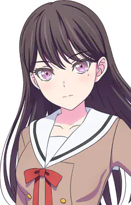

Characters Introduction
Characters Introduction

- Tomori Takamatsu
- School: Haneoka Girls' High School
- Year: First Year
- Birthday: 22nd November
- Zodiac Sign: Sagittarius
- Hobbies: Collecting things
- Food likes: Konpeito
- Food dislikes: Salmon roe, Cod roe
- Band: MyGO!!!!!
- Position: Vocals

- Anon Chihaya
- School: Haneoka Girls' High School
- Year: First Year
- Birthday: 8th September
- Zodiac Sign: Virgo
- Hobbies: Watching cosmetic videos
- Food likes: Smoked salmon, Fruit sandwiches
- Food dislikes: Pickled plums, Sour food
- Band: MyGO!!!!!
- Position: Rhythm Guitar

- Raana Kaname
- School: Hanasakigawa Girls' Junior High School
- Year: Third Year
- Birthday: 22nd February
- Zodiac Sign: Pisces
- Hobbies: Playing with cats
- Food likes: Matcha, Soba, Yubeshi
- Food dislikes: Garlic chives, Grated yam, Mint-flavored foods, Onions
- Band: MyGO!!!!!
- Position: Lead Guitar

- Soyo Nagasaki
- School: Tsukinomori Girls' High School
- Year: First Year
- Birthday: 27th May
- Zodiac Sign: Gemini
- Hobbies: Aromatherapy
- Food likes: Minestrone, Tea
- Food dislikes: Horumon
- Band: MyGO!!!!!
- Position: Bass

- Taki Shiina
- School: Hanasakigawa Girls' Academy
- Year: First Year
- Birthday: 9th August
- Zodiac Sign: Leo
- Hobbies: Collecting panda goods
- Food likes: Annin tofu
- Food dislikes: Shiitake mushrooms, Shirataki noodles
- Band: MyGO!!!!!
- Position: Drums